UI polish — items 11–30
2026-11-02 · Testing host, mock data. Not visible in static shots: #11/12 sound cues, #14 particle burst, #16 terrain lighting, #17 WebGPU flow, #19 chart morph, #20 pulsing pins, #28 hover/press states, #30 keyboard shortcuts.
Dashboard (desktop)
Before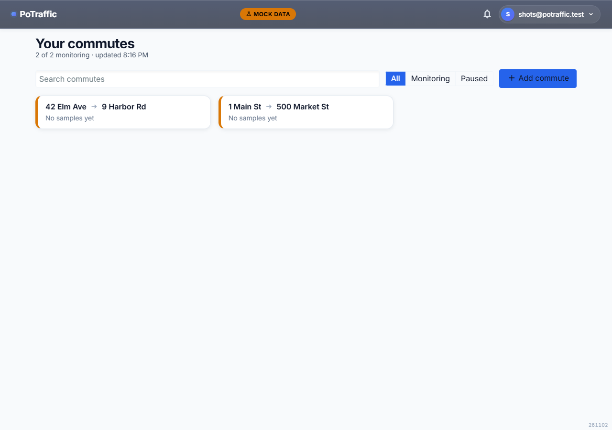
After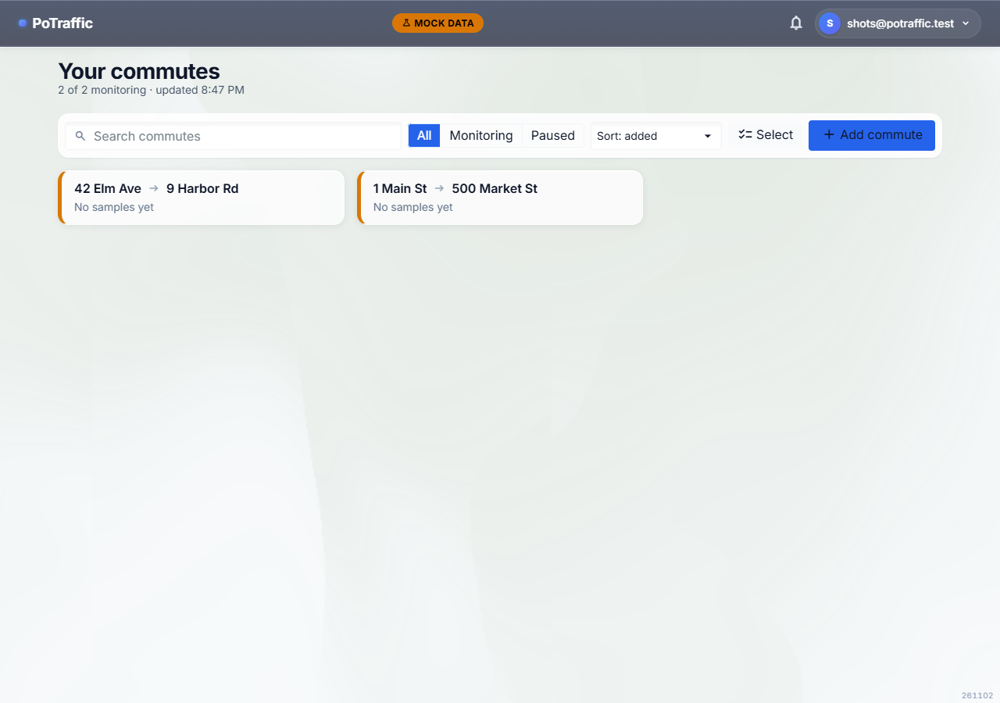
- #22 Search, status filter, new sort, and a Select button share one toolbar; Select opens a bulk pause/resume/delete drawer
- #13 A WebGL background tints with overall traffic right now
- #15 Route cards are frosted glass with a solid fallback
- #29 / #26 First load shows skeletons the same size as the cards, so nothing jumps
Dashboard (phone)
Before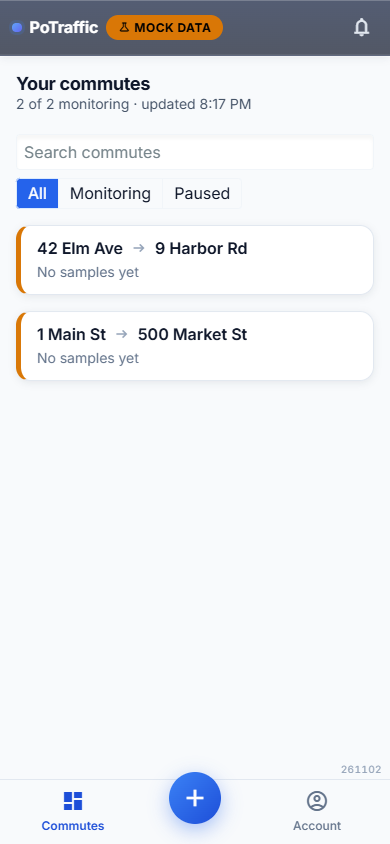
After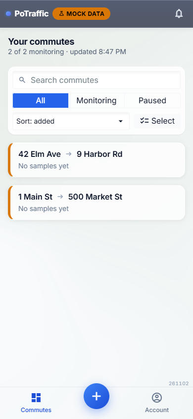
- The toolbar wraps inside one strip — no horizontal scroll at 390px
- #27 The build stamp clears the bottom nav and undo bar
Settings
Before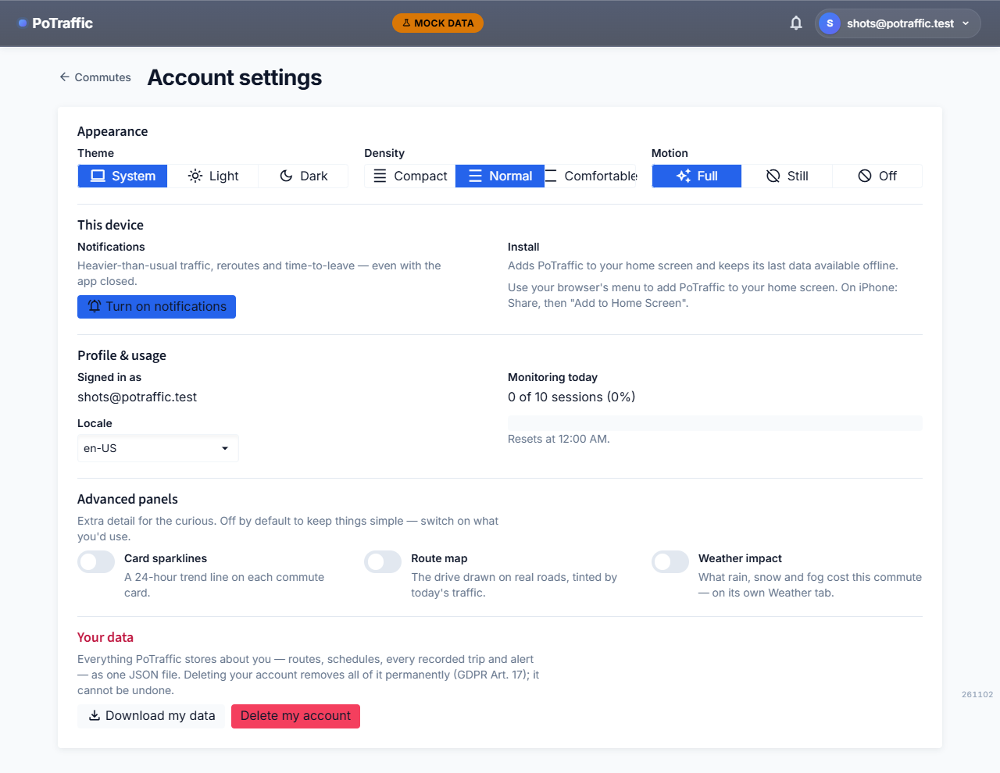
After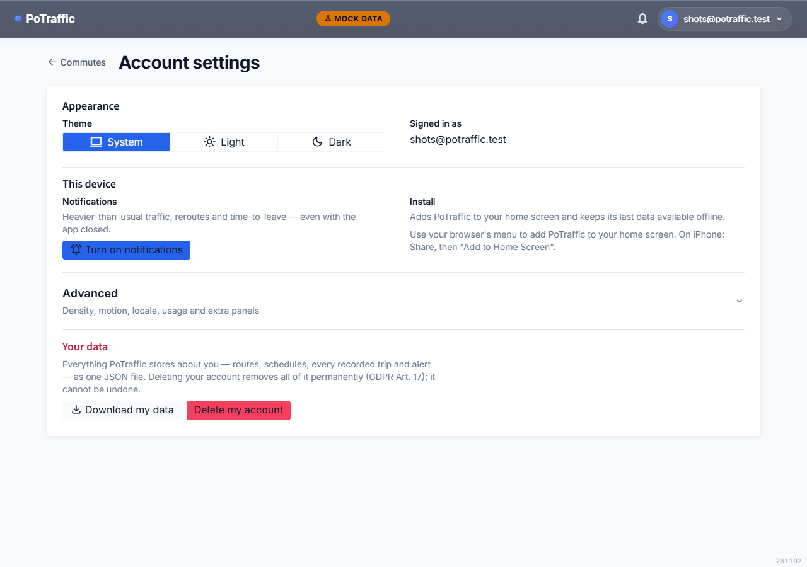
- #47 Density, motion, locale, quota and extra panels moved into a collapsible Advanced section
- #11 A new Sound switch sits under Advanced, next to Motion
- #21 Locale and delete-confirm now use Radzen fields and validators
New commute
Before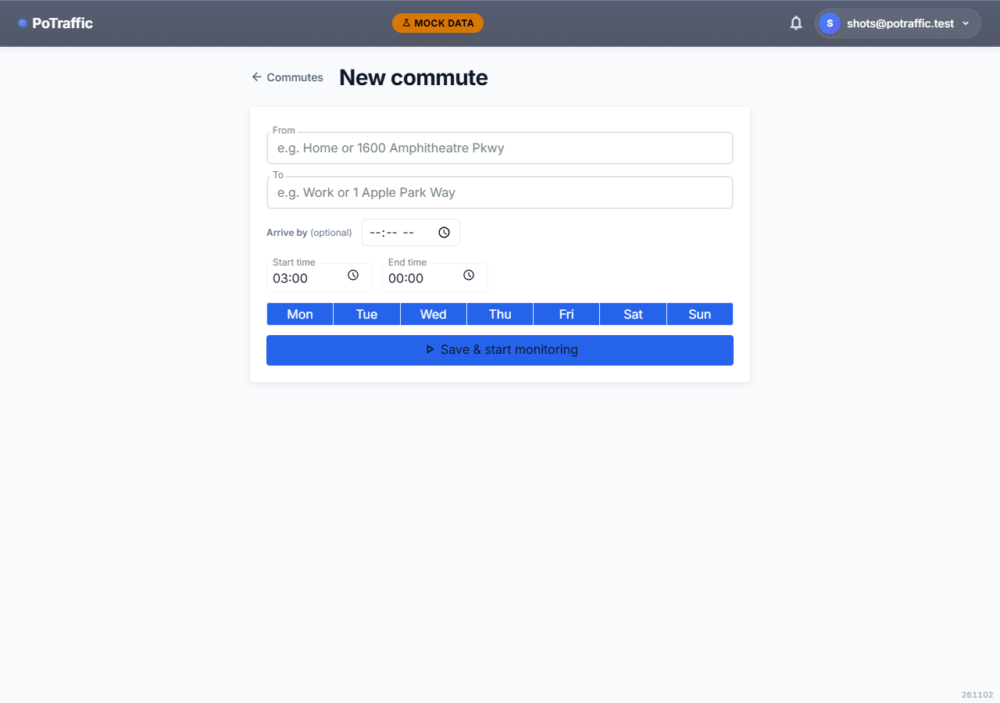
After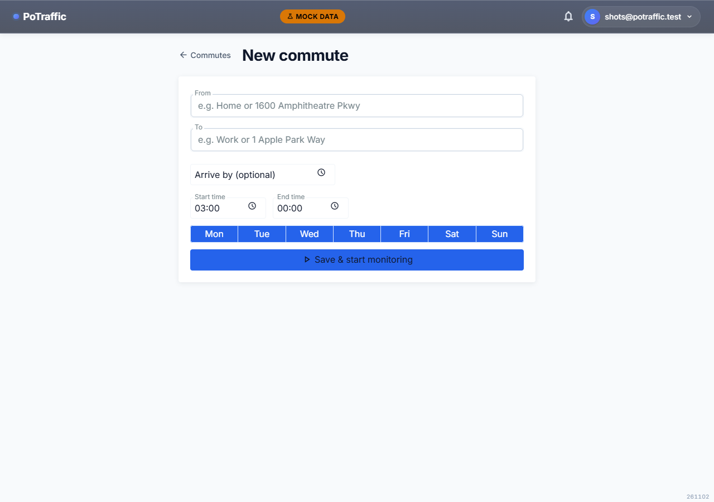
- #21 Every field is a RadzenFormField; arrive-by is a Radzen time picker
- Address errors show in each field's helper slot
Route detail (phone)
Before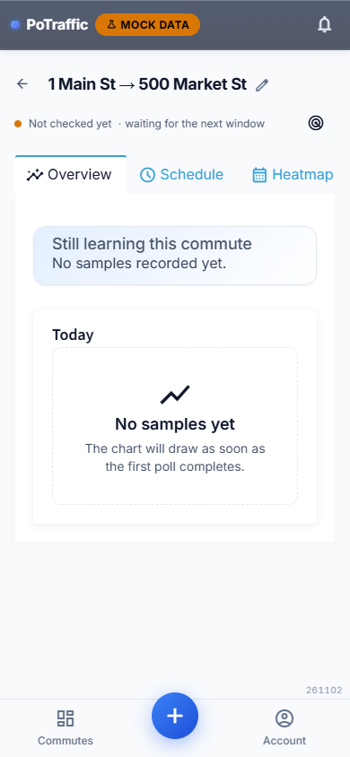
After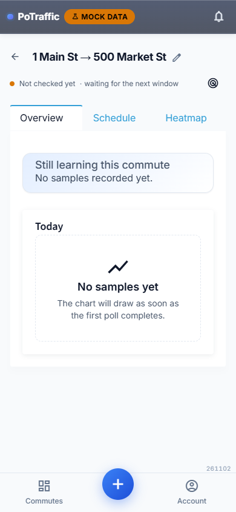
- #23 The tab strip scrolls inside itself, with icons hidden on phones
- #25 Probe status and addresses each have their own error boundary with Retry
- #30 c = Check now; ? shows all shortcuts
Admin (phone)
Before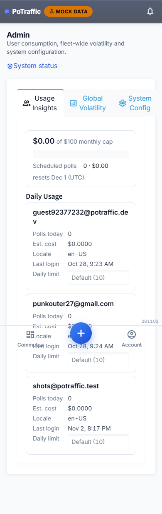
After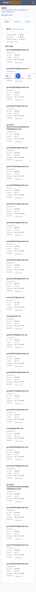
- #24 Cards, tabs and the spend breakdown no longer widen the page
- #48 Config values come from the server's IsEditable flag; feature flags show as switches